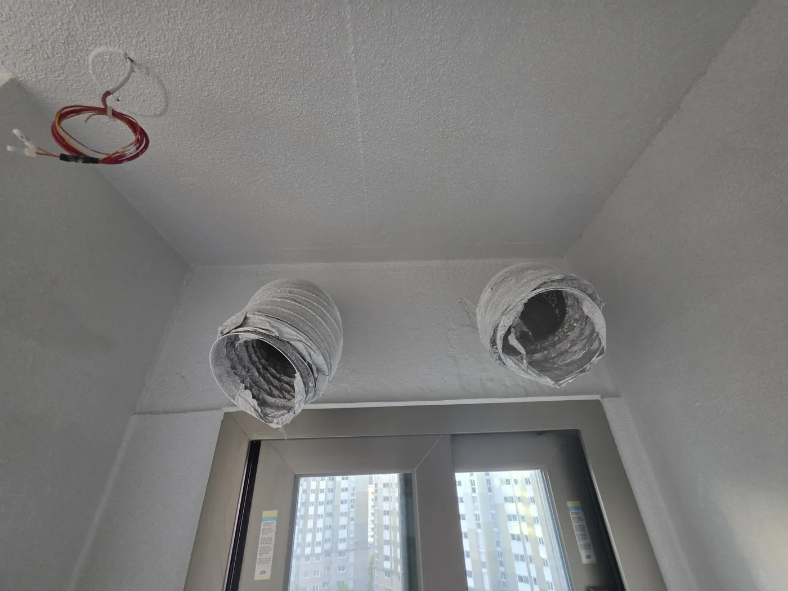
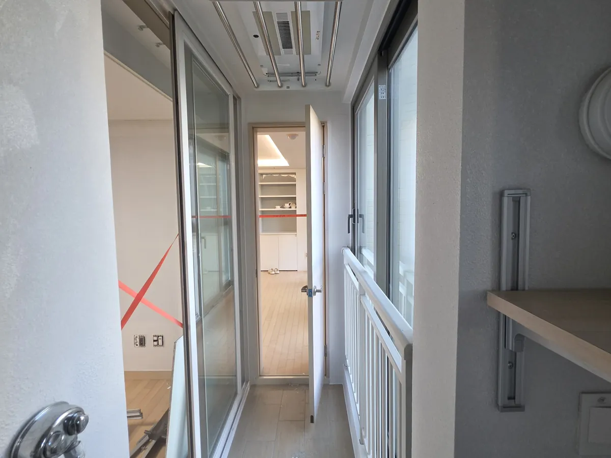

베란다·발코니 탄성코트 시공
베란다·발코니 탄성코트 시공
결로와 곰팡이 걱정은 줄이고,깔끔함은 오래.
누렇게 변하고 얼룩진 베란다 벽과 천장을 새로 칠해요. 세탁실, 다용도실도 함께 맡기실 수 있어요. A/S 2년.
청소해JO.의 탄성코트 시공 서비스

WORRIES이런 베란다라면 맞아요.
겨울마다 맺히는 물방울
바깥과 맞닿은 벽은 결로가 생기기 쉬워요.
모서리에 번지는 곰팡이
습기가 오래 머무는 자리부터 검게 변해요.
누렇게 변한 벽
오래된 페인트는 얼룩이 비치고 색이 바래요.
들뜨고 갈라진 페인트
갈라진 틈으로 다시 습기가 들어가요.

MATERIAL프리미엄 실리카 에어로겔
자재를 써요.
자재 이름은 작업 전에 그대로 알려 드려요. 결로를 완전히 막는다고 말씀드리지는 않아요. 단열과 환기 상태에 따라 달라지니, 현장을 보고 솔직하게 말씀드릴게요.
WHERE이런 곳에 시공해요.
탄성코트는 벽에 고무처럼 늘어나는 막을 입히는 마감이에요. 잔금이 덜 생기고 얼룩이 덜 비쳐요.
PROCESS네 단계로 시공해요.
탄성해JO.가 현장에서 실제로 진행하는 순서예요. 칠하는 시간보다 칠하기 전 준비에 더 공을 들여요.
STEP 01어디가 상했는지부터시공 전 상태 확인
바로 칠하지 않아요.벽과 천장의 들뜬 곳, 갈라진 곳, 얼룩진 곳을 먼저 둘러보고 어디를 손봐야 하는지 정해요.
STEP 02칠하기 전에 메워야 오래가요벽면 점검 · 하자 보수
갈라진 틈부터 메워요.배관 둘레 틈이나 갈라진 자리를 먼저 메우고 평평하게 다듬어요. 밑바탕이 고르지 않으면 칠한 뒤에도 금이 다시 보여요.
STEP 03칠할 곳만 칠하도록꼼꼼한 보양
창틀과 문, 바닥은 덮어 둬요.칠이 묻으면 안 되는 창틀, 문, 바닥을 비닐과 테이프로 빈틈없이 덮어요. 끝나고 정리할 때 훨씬 깨끗해요.
STEP 04마지막은 함께칠하고 함께 확인
얼룩이 비치지 않게 고르게 칠해요.여러 번 고르게 칠한 뒤 덮어 둔 것을 걷고, 고객님과 한 곳씩 둘러봐요. A/S는 2년 이상이에요.
FILM영상으로 보는 탄성코트.
시공 전과 후의 베란다 벽을 9초에 담았어요. 화면에 보이면 소리 없이 재생되고, 누르면 멈춰요.
BEFORE & AFTER시공 전과 후.
같은 베란다를 시공 전과 후에 찍었어요. 가운데 손잡이를 밀어서 비교해 보세요.
다른 현장 더 보기
탄성해JO.베란다탄성해JO.베란다
IN THE FIELD작업 기록.
메우고, 덮고, 칠한 자리들이에요. 옆으로 넘겨 보세요.
- 갈라진 곳 메우기
- 배관 둘레 마감
- 천장 작업 전 보양
- 출입문 보양
- 시공을 마친 세탁 공간
BEFORE & AFTER CARE시공 전에 챙길 것,
시공 후에 지킬 것.
시공 전- 베란다 비워 두기베란다와 다용도실의 짐, 빨래 건조대, 화분은 미리 옮겨 주세요.
- 신경 쓰이는 곳 말씀해 주기곰팡이가 심한 곳, 물이 새거나 결로가 맺히는 곳은 상담할 때 알려 주세요. 필요하면 사진을 부탁드릴게요.
- 칠할 범위 정하기베란다, 세탁실, 대피실, 실외기실 중 어디까지 할지 정해 두시면 상담이 빨라져요.
시공 후- 창문 열어 두기마르는 동안 창문을 열어 바람이 통하게 해 주세요. 마르는 시간은 시공하는 날 알려 드려요.
- 다 마를 때까지 닿지 않게벽에 짐을 기대거나 빨래를 널지 말아 주세요.
- 이상하면 바로 연락탄성코트 A/S는 2년 이상이에요. 들뜨거나 얼룩이 보이면 연락만 주세요. 다시 찾아가 볼게요.
PRICE시공 가격.
신축 아파트 기준 금액이에요. 구축이거나 범위가 다르면 상담하며 다시 알려 드려요.
COAT-JO탄성코트
50만 원
이런 자재를 써요
- 에어로겔을 넣은 4세대 탄성코트 제품
- 물을 튕겨 내는 발수 기능, 곰팡이 예방
- 튼튼하게 오래가는 도막
TRUST맡기기 전에 확인하세요.
어떻게 일하는지, 끝난 뒤 무엇을 챙기는지, 만일의 사고에 어떻게 대비하는지, 후기는 어디서 볼 수 있는지 숨기지 않고 보여 드려요.
PROCESS작업 과정
- ① 말씀만 하세요
- ② 상담하고 견적
- ③ 약속한 날 작업
- ④ 함께 확인하고 마침표
A/S탄성코트 2년 이상
기간 안에 불편한 곳이 생기면 연락만 주세요. 다시 찾아가 볼게요.
REVIEWS후기 출처
숨고 별점 5.0 · 후기 208건 · 2026년 10월 기준
후기 보러 가기
INSURANCE배상책임보험 가입
작업 중 실수로 집이나 물건이 상하거나 사람이 다치면, 가입한 도급업자배상책임보험의 약관에 따라 보상을 진행해요.
메리츠화재 · 보장 대인 · 대물
가입 증서 보기
탄성코트 가격은 얼마인가요?
신축 아파트 기준으로 베란다, 세탁실, 대피실, 실외기실까지 50만 원이에요. 구축이거나 범위가 다르면 상담하며 다시 알려 드려요.
탄성코트를 하면 결로가 없어지나요?
완전히 없어진다고 말씀드리지 않아요. 결로는 단열과 환기 상태에 따라 생겨요. 탄성코트는 벽 표면을 습기에 강한 막으로 덮어 곰팡이와 얼룩 관리를 쉽게 해 줘요.
곰팡이가 이미 있는 벽에도 할 수 있나요?
곰팡이와 들뜬 페인트를 먼저 걷어 내고 칠해요. 상태가 심하면 현장을 보고 따로 말씀드려요.
시공하고 바로 베란다를 쓸 수 있나요?
다 마를 때까지는 벽에 짐을 기대거나 빨래를 널지 말아 주세요. 마르는 동안에는 창문을 열어 두시면 좋아요. 마르는 시간은 시공하는 날 현장 상태를 보고 알려 드려요.
JO.
탄성코트 견적,
편하게 물어보세요.
베란다 크기와 벽 상태를 여쭤보고 알려 드려요.